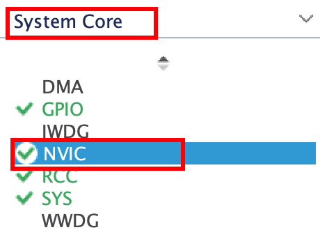
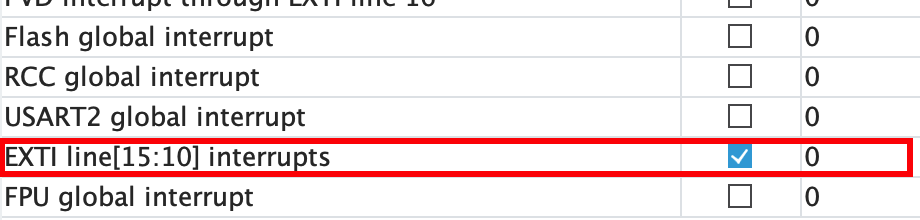
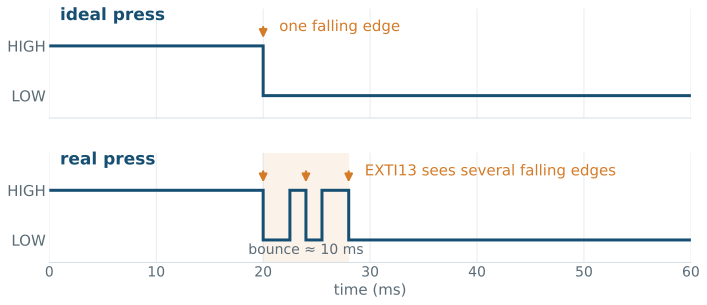

EE5203 Microprocessors
L06 - GPIO Interrupts
L05 exit ticket - the answers
01 REGISTER — PC13’s MODER bits 27:26 = 00 and PUPDR bits 27:26 = 00.
02 POINTER — the function reads your members through the address; no copy is made.
03 LOGIC — GPIO_PIN_RESET: pressing grounds PC13; the external pull-up holds it high only while released.
04 EVIDENCE — the SFR view: both PC13 fields read 00 (and IDR bit 13 follows the physical button).
Today: why reading B1 in a loop is not enough, and how the button can tell the processor itself.
Polling and Interrupts
01
Step 1 of 4
Reading the button in a loop misses short presses. An interrupt lets the button tell the processor itself.
01 · Polling
02 · The Path
03 · Building It
04 · Debounce
Polling misses a short button press
while (1) {
if (HAL_GPIO_ReadPin(GPIOC, GPIO_PIN_13) == GPIO_PIN_RESET) {
HAL_GPIO_TogglePin(GPIOA, GPIO_PIN_5);
}
HAL_Delay(500); /* other work: busy 500 ms, B1 is not read */
}A polling program sees B1 only when it reads the pin, so a press between two reads is lost.
Polling and interrupts in a doorbell analogy
POLLING — you check the door
INTERRUPT — the bell calls you
| In the doorbell story | On the STM32 |
|---|---|
| the bell button is pressed | B1 is pressed, PC13 falls |
| the bell rings | an interrupt request reaches the processor |
| you mark your page, answer, read on | the CPU pauses main(), runs the handler, continues |
An interrupt pauses main() and runs a handler
An interrupt: hardware makes the processor pause main(), run one function, then continue where it stopped.
01 That function is the interrupt handler (ISR). Hardware starts it; main() never calls it.
02 The handler must be short: main() waits while it runs.
03 A timer (L07), the ADC (L09) and the UART (L10) interrupt the same way.
What you will do with interrupts today
The lecture has four parts. Each part starts with a divider slide.
| Part | After this part you can |
|---|---|
| 1 Polling and Interrupts | say why polling misses a press and what an interrupt changes |
| 2 The Interrupt Path | explain what EXTI, the NVIC, the vector table, the handler and the callback do, and trace one press from PC13 to your callback |
| 3 Building the Button Interrupt | configure B1 for a falling-edge interrupt in CubeMX, and pass the event to main() with a shared variable |
| 4 Debounce and Debugging | filter the extra edges of switch bounce, and check each block of the path in the debugger |
In the lab you build all of this: one LD2 change per press.
The Interrupt Path
02
Step 2 of 4
One press of B1 travels through six numbered blocks, from the switch on the board to your callback in flash.
01 · Polling
02 · The Path
03 · Building It
04 · Debounce
The interrupt path has six blocks, from B1 to your callback
Blocks 1 to 3 are ST peripherals; blocks 4 and 5 are the Arm core; block 6 is your code. The wire from block 2 to block 3 carries the interrupt request (IRQ).
B1 is active-low: a press makes a falling edge

| B1 | PC13 | Input reads |
|---|---|---|
| released | high | GPIO_PIN_SET |
| pressed (to ground) | low | GPIO_PIN_RESET |
Press: high → low = falling edge.
Release: low → high = rising edge.
We want one event per press, so we select the falling edge.
EXTI detects the edge and sets the pending bit
An interrupt request is a peripheral’s signal to the processor: “I need service.” A pending bit stores it until the processor serves it, so no request is lost.
EXTI (External Interrupt controller) sets pending bit 13 on the falling edge of PC13; the request reaches the NVIC only if the mask bit EXTI->IMR bit 13 is 1.
Deep dive: RM0368 Rev 6, §10 EXTI — p. 205.
The NVIC chooses which request the CPU serves
Every peripheral’s request goes to the NVIC, the Nested Vectored Interrupt Controller. For each request it has one enable switch and one priority number.
01 Our request: B1 is request 40, EXTI15_10_IRQn. EXTI lines 10 to 15 share it.
02 Enable off: pending bit set, nothing runs: the most common lab bug.
03 Priority: 0 = most urgent; a more urgent request can interrupt a handler.
04 Our projects: all at 0, SysTick too: no handler ever interrupts another.
The vector table maps request 40 to a handler address
Filled by ST’s startup file before main() runs. You never write the table; you write only the handler.
The CPU saves its place and looks up the handler
When the NVIC passes request 40 on, the CPU does three steps in hardware:
01 Finish the current instruction; save the return address and registers on the stack.
02 Read row 16 + 40 of the vector table: the address of EXTI15_10_IRQHandler.
03 Jump to the handler. On return, restore the registers and continue main().
The IRQ handler calls a HAL helper, which calls your callback
Three files, three functions: CubeMX wrote the handler, ST wrote the helper, you write the callback.
Practice: order the interrupt path
Write the numbers 1 to 6 in the empty cells: the order in which one B1 press visits each block. Work with your neighbour. Time: 3 minutes.
| Block | Order |
|---|---|
NVIC |
|
| your code: handler → callback | |
| vector table |
| Block | Order |
|---|---|
CPU |
|
| B1 / PC13 falling edge | |
EXTI |
Then say each block’s job in one sentence. The next slide shows the answer with the real register names.
Worksheet Part A, question 1 asks the same with eight stations.
The complete interrupt path with register names
The same schematic as the overview. The names under each block are what you will see in CubeMX, in the generated code and in the debugger.
Building the Button Interrupt
03
Step 3 of 4
You make three choices in CubeMX, write one callback and share one variable. Then the path runs as a program.
01 · Polling
02 · The Path
03 · Building It
04 · Debounce
Three CubeMX choices configure the B1 interrupt
For B1, make three choices:
01 Click PC13 and select GPIO_EXTI13.
02 GPIO mode: falling-edge interrupt, no internal pull.
03 NVIC: enable EXTI line[15:10] interrupts.
Choice 3 is the NVIC enable. The vector table and the handler come from ST and CubeMX.


CubeMX, System Core → NVIC: choice 3 (real screenshot).
CubeMX generates the setup code; you write only the callback
GPIO_InitStruct.Pin = GPIO_PIN_13;
GPIO_InitStruct.Mode = GPIO_MODE_IT_FALLING; /* block 2: falling edge */
GPIO_InitStruct.Pull = GPIO_NOPULL;
HAL_GPIO_Init(GPIOC, &GPIO_InitStruct); /* SYSCFG, FTSR, IMR bit 13 */
HAL_NVIC_SetPriority(EXTI15_10_IRQn, 0, 0); /* block 3: priority */
HAL_NVIC_EnableIRQ(EXTI15_10_IRQn); /* block 3: enable */| Block | Set up by | Where |
|---|---|---|
| 2 EXTI (and SYSCFG) | HAL_GPIO_Init |
main.c, generated |
| 3 NVIC | HAL_NVIC_EnableIRQ |
main.c, generated |
| 5 vector table | ST startup file | flash, before main() |
| 6 handler · callback | CubeMX · you | stm32f4xx_it.c · main.c |
This setup runs once, before while (1). The path then runs on every press.
First test: the interrupt version of the polling loop
Polling (slide 4): the loop reads PC13.
The press arrives during HAL_Delay(): the callback runs, toggles LD2, and the loop continues. No press is lost. Live demo. This is only a test: application code does not belong in the callback.
A long callback freezes main()
Live demo: press B1 and the heartbeat stops for good. HAL_Delay() counts SysTick interrupts. SysTick cannot interrupt our handler, so the delay never ends and the callback never returns.
Rule: a callback checks the source, records the event, and returns at once. No HAL_Delay(), no loops, no printing.
The volatile event variable
One variable carries the event from the callback to main().
Without volatile |
With volatile |
|---|---|
main() may reuse an old copy in a CPU register |
main() reads button_event from memory every time |
the 1 from the callback can be missed |
the 1 from the callback is always seen |
Deep dive: C11 draft N1570, §6.7.3 — p. 140 · M. Barr, How to Use C’s volatile Keyword.
The callback records the event; main() consumes it
The callback records the event: no LED action, no waiting.
void HAL_GPIO_EXTI_Callback(uint16_t GPIO_Pin)
{
if (GPIO_Pin == GPIO_PIN_13) {
button_event = 1;
}
}The main loop consumes the event and no longer polls PC13: reset the variable first, then act.
The pending bit and button_event are two different flags
Both are called “flags”, but they live in different places and are cleared by different code. The exit ticket asks for this difference.
Debounce and Debugging
04
Step 4 of 4
One press must give one event, and every block of the path can be checked in the debugger.
01 · Polling
02 · The Path
03 · Building It
04 · Debounce
A real button bounces: one press, several falling edges
A mechanical contact does not switch cleanly once:

This is switch bounce. Each extra falling edge can set another interrupt request.
Software debounce accepts one edge per 80 ms
uint32_t last_press_ms = 0;
void HAL_GPIO_EXTI_Callback(uint16_t GPIO_Pin)
{
uint32_t now = HAL_GetTick();
if (GPIO_Pin == GPIO_PIN_13 &&
(now - last_press_ms) >= 80) {
last_press_ms = now;
button_event = 1;
}
}HAL_GetTick() returns the milliseconds since startup as a uint32_t.
The 80 ms guard: bounce settles within about 10 ms, so 80 ms skips every bounce edge. A fast double press takes longer than 80 ms, so it still counts as two presses.
The 10 ms figure comes from measured data: J. Ganssle, A Guide to Debouncing.
Checking the interrupt path in the debugger
Check the blocks in order and stop at the first one that fails. Read the registers in the SFR view in VS Code.
| Block | Check | Evidence (SFR view) |
|---|---|---|
| 1 B1 | high released, low pressed | IDR bit 13 |
| 2 EXTI | falling edge, unmasked | FTSR, IMR bit 13 = 1 |
| 3 NVIC | request enabled | handler breakpoint is reached |
| 4–5 CPU | handler entered | PR bit 13 = 1 at the breakpoint |
| 6 callback | pin and flag | watch GPIO_Pin, button_event |
Register definitions: RM0368 Rev 6, EXTI_PR — p. 211.
Lab 5: one LD2 change per press with an EXTI interrupt
Replace the Lab 4 polling loop with a PC13 falling-edge interrupt: one LD2 change per press.
- configure PC13 and enable the correct NVIC request;
- prove that the generated handler and callback run;
- pass the event to
main()withbutton_event; - add the 80 ms debounce check.
Next week the same six blocks serve a timer instead of a button.
Exit ticket
01 EXTI: what does it detect and remember?
02 NVIC: what does enabling an IRQ allow?
03 VECTOR TABLE: what information does it store?
04 HANDLER / CALLBACK: which does the processor enter; which does HAL call?
05 TWO BITS: EXTI pending bit vs button_event — the difference?
Scan the code before you leave. It is not graded; your answers open the next lecture.
Every concept in this lecture, with page-linked sources: academic references.
EE5203 - L06